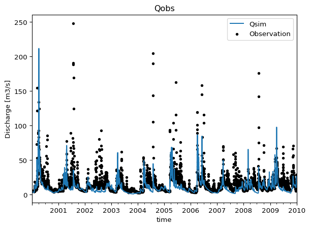
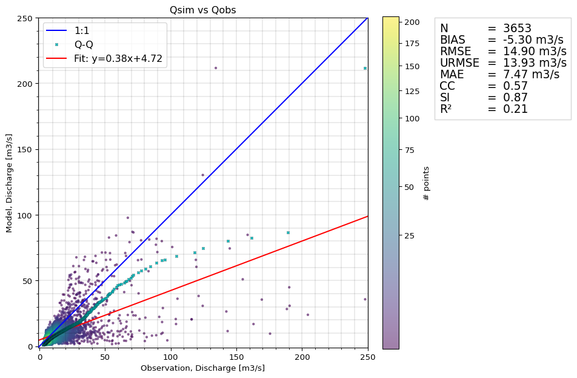

This page describes a simple ModelSkill workflow when model results and observations are already matched. See workflow page for a more elaborate workflow.
Installation
Using uv
uv is an extremely fast Python package and project manager that is 10-100x faster than pip, and also makes it easy to install Python and manage projects. With uv, creating a virtual environment is as easy as uv venv.
To install ModelSkill, run this command in a terminal:
A time series plot is a common way to visualize the comparison.
cmp.plot.timeseries()

Another more quantitative way to analyze the compared data is to use a scatter plot, which optionally includes a skill table (Definition of the metrics).
cmp.plot.scatter(skill_table=True)

The skill table can also be produced in tabular format, including specifing other metrics.